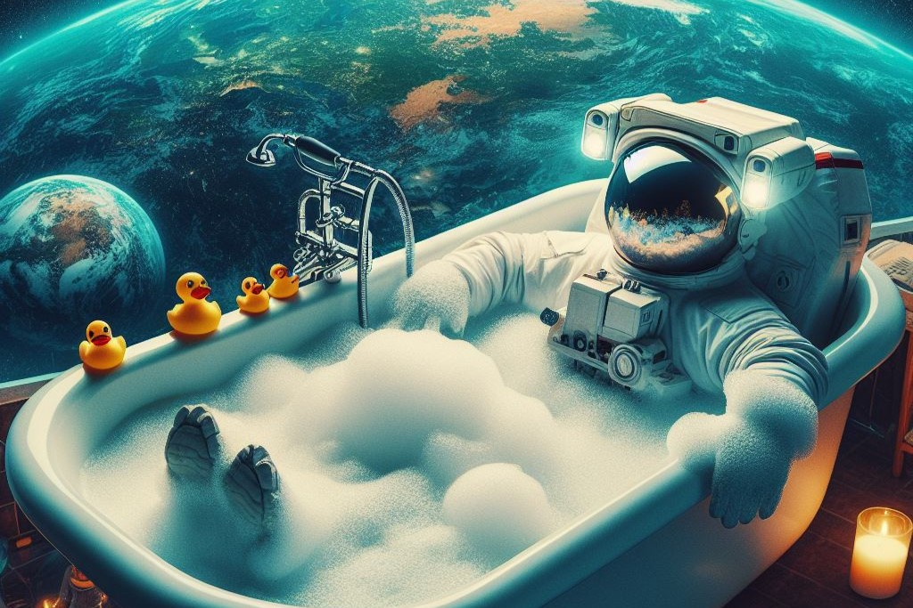

DALL·E
 OpenAI, cioè l'organizzazione che si occupa dell'implementazione di GPT e del suo front-end, il chatbot ChatGPT, permette di generare immagini tramite il modello chiamato DALL·E.
Si tratta di un LDM (Latent Diffusion Model) il cui nome deriva dalla combinazione tra il nome del pittore spagnolo Salvador Dalí e quello di WALL·E, personaggio dell'omonimo film Pixar.
DALL·E è in grado di generare immagini originali e realistiche partendo da descrizioni testuali. Utilizza inoltre tecniche di NLP (Natural Language Processing) e di Deep Learning per produrre i propri output.
Un LDM è un tipo di modello generativo che opera sulla base di un processo di diffusione nel cosiddetto spazio latente. Questo tipo di modello è stato sviluppato per generare dati, come immagini o testi, partendo da un insieme di dati di input.
In pratica, durante il processo di generazione, il modello muove gradualmente un punto nello spazio latente attraverso una serie di passaggi, ciascuno dei quali rappresenta un piccolo cambiamento nei dati generati.
Questo processo di diffusione consente al modello di generare dati complessi e realistici, poiché ogni passaggio può essere visto come un passaggio di raffinamento che aggiunge dettagli al dato generato.
Il training del modello viene operato a partire da una vasta raccolta di immagini e testi. Ciò è possibile utilizzando una variante della tecnica di Machine Learning supervisionato nota come RL (Reinforcement Learning).
In questo modo DALL·E può creare non soltanto immagini di esseri e oggetti comuni (ad esempio animali e oggetti domestici) ma anche di scene vere e proprie e persino di concetti astratti. Infatti, può anche immaginare scenari e oggetti fantastici o non esistenti, come "un albero che cresce hamburger" o "un elefante volante con una criniera di fuoco". Questa flessibilità lo rende uno strumento potente per esplorare idee visive in modo creativo.
Casi studio
Prompt 1:
“Un corgi fatto di nuvole che galleggia in un cielo al tramonto”
Il risultato offerto da DALL·E è più che soddisfacente, in quanto l’AI è stata in grado di fondere insieme elementi reali in un contesto non realistico. In questo esempio non era stato specificato alcuno stile per l’immagine, nonostante ciò le due immagini sembrano sono molto simili da questo punto di vista.
E' stato chiesto all’AI di aggiungere delle “stelle a forma di margherite nel cielo” e qui a sinistra si può osservare il risultato. Si nota come la richiesta è stata esaudita con l’aggiunta però di ulteriori modifiche non richieste: la posizione del cane e il campo di margherite sul terreno.
Prompt 2:
“Goku e Vegeta che leggono insieme il manga di Dragon Ball seduti sul divano”
Con questo prompt si vuole mettere alla prova l’AI con la generazione di personaggi già esistenti. Il risultato è molto buono nonostante possa essere considerato peggiore rispetto al precedente, questo perché nella seconda immagine non è presente il personaggio di Vegeta (richiesto nel prompt) ma viene ripetuto due volte Goku, questo probabilmente a causa della difficoltà dell’AI di replicare personaggi con un loro character design ben preciso. Stessa cosa dicasi per le illustrazioni sulla copertina del manga, in cui i visi ed in particolare gli occhi, appaiono assai distorti. Anche in questo caso non era stato specificato alcuno stile, infatti i due risultati appaiono molto diversi, sebbene il secondo si avvicini molto allo stile di disegno dell’opera originale.
Prompt 3:
“Una donna dai capelli castani, con occhi verdi che monta un cavallo al galoppo su una spiaggia di giorno, in stile Pixar”
Questo prompt è stato utilizzato principalmente per verificare le capacità dell’AI nella generazione di esseri umani, infatti solitamente si tende a riscontrare maggiori problemi nella realizzazione dei volti, degli occhi e delle mani. Ciò non è avvenuto ed il risultato è molto buono sebbene lo stile non sia stato rispettato.
Proprio a causa di questa richiesta non esaudita, si è provato a richiedere all'AI di modifica ulteriormente l'immagine chiedendone nuovamente la modifica dello stile.
In questo caso l'immagine ottenuta è corretta e molto soddisfacente.
Prompt 4:
“Persone sedute su panchine bevendo cocktail arancioni in bicchieri di plastica, i bicchieri sono anche in scatole di cartone bianco, scena serale con lampioni accesi, vicino a un fiume, in stile Pixar”
Qui si è testata l’AI sfidandola ad ottenere una scena più complessa ed il risultato è stato molto buono, senza particolari distorti o artefatti tipici delle immagini generate. Anche in questo caso, la richiesta dello stile non è stata accontentata, ottenendo sicuramente un’immagine non fotorealistica, ma somigliante più un’illustrazione.
Integrazione API
Per utilizzare DALL·E attraverso le proprie applicazioni è necessario disporre innanzitutto di un'API Key per l'interazione con le API OpenAI. A ciò si aggiunga che il prezzo varia a seconda della grandezza delle immagini. Ad esempio, il sistema richiede 0.016 dollari per un'immagine con risoluzione pari 256×256 px, 0.018 per 512×512 px e 0.020 per 1024×1024 px. Questo ovviamente porta ad un notevole risparmio rispetto all’utilizzo del tool vero e proprio, in quanto si paga solo ciò che si usa e non un fisso mensile. L’API ha tre capacità: gli utenti possono generare un’immagine, modificare una parte dell’immagine e anche generare più varianti dell’immagine. All'utilizzatore spetta il compito di confezionare un prompt, cioè una richiesta espressa in linguaggi naturale, e di attendere la risposta (in questo caso un'immagine grafica o fotografica) da parte del modello.
openai.Image.create(
prompt=”A cute baby sea otter”,
n = 2,
size = “1024x1024”
)
Un esempio del genere permetterebbe di generare due immagini che verranno restituite all’utente con un URL.
Conclusioni
DALL·E ha suscitato grande interesse per le sue potenzialità creative e le sue applicazioni in campi come la progettazione grafica, la creazione di contenuti digitali e molto altro ancora. Tuttavia, va notato che il modello è ancora in fase di sviluppo e miglioramento, e ci sono ancora sfide da affrontare, come la comprensione del contesto e la coerenza nella generazione delle immagini. Al momento sembra offrire il maggior equilibro tra qualità di immagini generate e usabilità, avendo reso disponibili le API.